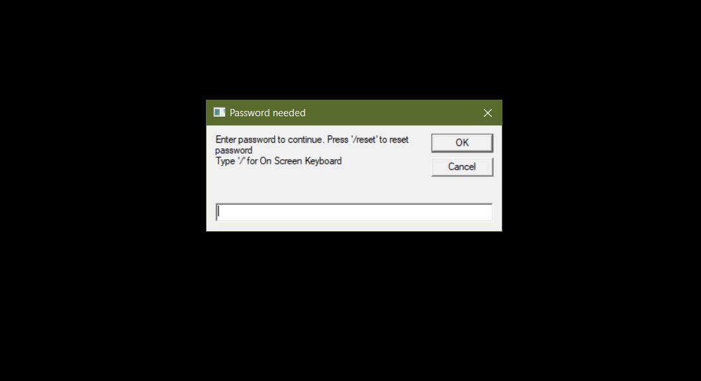

Welcome to the projects site!
Have a look on some of the projects I've made since the last years! Last update: Sunday 16/2/2025Secondary Locker
The script that got flagged as trojan by VirusTotal with 8% of all antivirus software flagging it as a threat.In fact, this was a project that didn't even take over 4 months to complete. I was inspired by a YouTube video called
4 Cool VBS Scripts With Codeswhich was uploaded by techkitv exactly the day I became a year old (1/2/2011) and decided to remake one and add some special ingredients in it. And that was where I had never expected the project to be that heavy due to what virus tests resulted to.  Basically what this does is that it
locks your computerwith a password that you've set before. (It disables Task Manager, Registry Editor, Command Prompt, closes some known apps opened before and closes Explorer.exe)
Tip: Put this file on your startup folder
( Shell:Startup )
so it runs after user login (Delay may occur)
Click to view it on GitHub
The ultimate settings tool just from batch!
This project is the one that took me the most time to make! With this batch script you can change system settings, customize appearance (+ Access to 'hidden' settings), change date/time and region settings and even more!This project took me a year to finish (meaning I haven't found something else to put after research) and it has been of the most time-consuming projects I had ever worked on. I had firstly started this project οn Spring of 2023 but I didn't continue the project until Summer. After a year, I started thinking about ways to continue the project (I didn't even know where to start of honestly). And that led me to the 4th version of the script with much more settings and much more improvements made on October 2024.
Click to view it on GitHub

The NewTab HTML project
The best way to start browing the web just from an HTML! This HTML page has the ability to search on the web for you and even pick between Google's search engine or Bing's search engine. You also have the ability to go to any pages you want just by typing the FULL URL ADDRESSClick to view it on GitHub